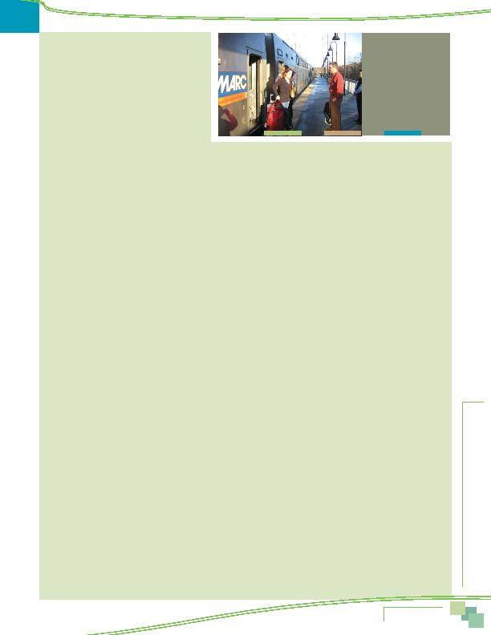

|

acceptance of formal telecommuting. by far, was "special program at work/employer," named by 71% of respondents. This percentage was considerably higher than in the 2007 survey, in which only 55% of telecommuters cited their employer as the source of information and higher still compared with the 34% who gave this answer in 2004. about the same percentage that mentioned Commuter Connections/MWCOG in each of the previous three SOC surveys: 2007 (7%), 2004 (5%), and 2001 (4%). weekly commute trips made to worksites outside the home (excluding telecommuting) declined from 71% in 2001 to 64% in 2010. This represents a drop of seven percentage points over the nine year period. use grew from 4.6% to 5.7%. The shares of weekly commute trips made by carpool/vanpool remained essentially constant. or walk) as their primary mode, that is, the mode they used most days in a typical week. An additional four percent of commuters used an alternative mode one or two days per week, resulting in more than a third of all regional commuters using a non-drive alone mode at least once per week. An additional one percent of commuters said they used the train one or two days per week. bus to work. these modes one or two days per week. The majority of carpoolers used a "traditional" form of carpooling, with the same partner(s) all the time. About one in ten carpoolers/vanpool trips was made by "casual" carpooling (slug). years prior to the survey. This represented an increase over the 14% of respondents who said in the 2007 survey that they tried another mode and about the same percentage as reported trial use of alternative modes in the 2004 (22%) and 2001 (24%) SOC surveys. and seven percent tried or used a bus. Four percent tried or used bicycle or walk for commuting. driving alone. The other 47% switched from another, different alternative mode. These "retention" switches are important to maintain the congestion mitigation and environmental benefits of past alternative mode shifts. spot (park & ride lot, train station, carpool driver's home, etc.) and left their cars at those places. Respondents traveled an average of 2.6 miles to these meeting points. A third (35%) of respondents walked to the meeting point and the remaining respondents who used an alternative mode either took transit, or were dropped off by a carpool partner or picked up at home. alternative mode was train, which was used by about 15% of respondents as their primary mode. |